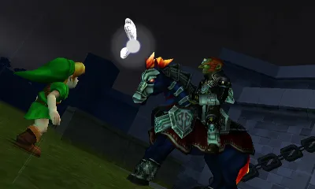

Welcome to Ocarina of Time!

Background of Ocarina of Time
If you are familiar with The Legend of Zelda series, you would most likely recognize the well-known game: Ocarina of Time. Ocarina of Time was initially released by Nintendo in 1998 and was only compatible for the N64, GameCube and the IQue Player. It is recorded to be the fifth Zelda game and has accomplished numerous rewards. Within the published year, Ocarina of Time won the title “Game of the Year.” The game additionally won the “Winner Interactive Achievement Award” in 1999. It can be found in the Guinness World Records as well! Years later, Ocarina of Time was released for the 3DS in 2011. This advancement enhanced the game’s graphics, motion controls and audience’s satisfaction.

Ocarina of Time Gameplay
Alike to the other Zelda series, the objective of Ocarina of Time is to conquer the enemies and rescue Princess Zelda. This remarkable game is known for its storyline and gameplay. The plot of the game revolves around a special ocarina which is used to alter the timeline. The main character, Link, is ordered to travel forward and back 7 years in his journey. As the audience progresses in the game, it increasingly involves more creativity. The puzzles intensifies and the player is required to think more thoroughly
What Appeals the players?
Ocarina of Time garners attention for several reasons. The main reason for its viewer attraction is for its temples and music. People who have seen or played through the game can unanimously agree that the music is melodious. You can find numerous downloadable soundtracks online in regards to their assortments of music. Moreover, the temples are another enjoyable feature about the game. They all have different themes with different puzzles!
- OOT Wiki
- More OOT info